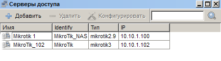
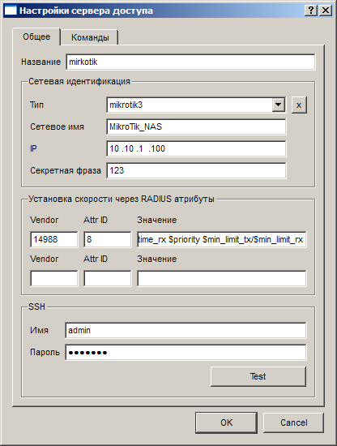
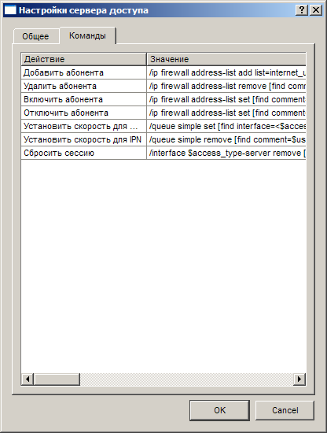
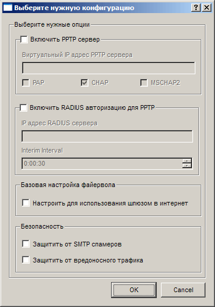

|
Интерфейс и логика |
Top Previous Next |
|
Открыть раздел «Серверы доступа» можно одним из следующих способов:
– кнопкой на панели; – через меню «Главное меню» → «Серверы доступа»;
 Основные функции окна «Серверы доступа»:
«Добавить» – вызывает окно с настройками для создания нового идентификатора сервера доступа (см. описание окна «Настройки сервера доступа» ниже).
«Удалить» – удаляет выбранный сервер доступа, а также связанные с ним учетные записи пользователей (аккаунты) и статистику.
Обратите внимание: удаление серверавызовет удаление связанной с ним информации (абоненты, статистика).
«Конфигурировать» – открывает мастер конфигурирования сервера доступа. Данные настройки действуют только для серверов доступа MikroTik.
Окно «Настройки сервера доступа»
Данное окно вызывается при нажатии кнопки «Добавить», а также при редактировании свойств уже существующих серверов доступа (двойной щелчок по названию в списке, либо пункт «Настройки» из контекстного меню).
В окне представлены вкладки «Общее» с основными настройками и «Команды» с конкретными командами для управления сервером доступа.
На вкладке «Общее» устанавливаются основные настройки для данного сервера доступа. В группе «Сетевая идентификация» представлены основные сетевые параметры для работы с сервером доступа посредством протокола RADIUS.
 Общие настройки сервера доступа
 Настрока команд сервера доступа
"Тип" - один из предустановленных типов серверов доступа. Типы серверов доступа отличаются друг от друга набором команд для управления авторизацией и состоянием абонентов. Для заполнения полей нужными наборами команд для выбранного сервера доступа необходимо нажать на звёздочку рядом с выпадающим списком.
«Название» – в этом поле вам необходимо ввести название сервера доступа в системе Expert Billing System. Данное поле обязательно для заполнения и используется только в информативных целях.
«IP» – в этом поле указывается IP-адрес сервера доступа, с которого биллинг-системе будут передаваться запросы на авторизацию. Данное поле обязательно для заполнения.
«RADIUS Identify» – в этом поле нужно указать RADIUS-идентификатор сервера доступа. В RouterOS MikroTik его можно посмотреть или сменить в меню System → Identify.
«Секретная фраза» – в этом поле указывается произвольная последовательность символов для опознания RADIUS-сервера выбранным сервером доступа. Данное поле обязательно для заполнения.
В группе «SSH» производятся настройки реквизитов для работы с сервером доступа:
«Имя» – в данном поле указывается имя пользователя (логин) для подключения по SSH к серверу доступа по адресу, указанному в поле IP. Данное поле обязательно для заполнения.
«Пароль» – в этом поле указывается пароль для подключения по SSH к серверу доступа по адресу, указанному в поле IP. Данное поле обязательно для заполнения.
При нажатии кнопки «Test» осуществляется тестовое подключение к серверу доступа (адрес берется из поля IP) по SSH, с указанными в полях «Имя» и «Пароль» логином и паролем. Всплывающее окно известит вас о результате.
Обратите внимание: если тестовое соединение с сервером доступа не было установлено корректно (во всплывающем окне сообщается, что «Не верно указаны параметры для доступа, сервер доступа недоступен или неправильно настроен»), то система не сможет передавать серверу доступа команды управления для активации и деактивации пользователей, установки ограничений скорости и выполнения ряда других действий. Для корректной работы биллинг-системы с данным сервером доступа убедитесь, что тест SSH-соединения с сервером выполняется успешно.
На вкладке «Команды» производится настройка шаблонов команд для управления сервером доступа. Для каждого типа серверов доступа набор команд может отличаться. В систему Expert Billing System встроены наборы команд для серверов на базе Mikrotik RouterOS версий 2.8.х, 2.9.х и 3.х.х. Для их установки надо выбрать на вкладке «Общее» в списке «Тип» соответственно «mikrotik2.8», «mikrotik2.9» и «mikrotik3», а затем в открывшемся диалоговом окне согласиться на перезапись конфигурации команд (см. выше). Команды для сервера доступа «mikrotik2.9» наиболее совместимы со всеми версиями RouterOS, поэтому мы рекомендуем использоваться именно ими.
Окно «Конфигурировать»

При установке флажка «Включить PPTP сервер» будет запущен PPTP-сервер с поддержкой протоколов PAP, CHAP или MSCHAP2 (в зависимости от соответствующих установленных флажков). IP-адрес внутреннего интерфейса сервера для тоннелей указывается в поле «Виртуальный IP адрес PPTP-сервера».
При установке флажка «Включить RADIUS-авторизацию для PPTP» на сервере доступа будет включен RADIUS-клиент.
Если установлен флажок «Настроить для использования шлюзом в интернет», на сервере доступа будет включен masquerading для всех интерфейсов. Возможно, вам потребуется откорректировать уже созданные правила для разрешения masquerading-а только на необходимые IP-адреса и сети.
Если установлен флажок «Защитить от SMTP спамеров», то пользователи, подключенные через данный сервер доступа, будут блокироваться на полчаса при попытке отправить более 30 запросов на 25-й порт (SMTP) за короткий промежуток времени.
Если установлен флажок «Защитить от вредоносного трафика», то на сервере доступа будут закрыты порты, использующиеся набором разнообразных вредоносных программ (сетевых червей, вирусов, троянских программ и т.д.).
Все правила допускается править самостоятельно после их создания.
Вы можете создать несколько логических серверов доступа для одного физического и задать командами различные модели работы для каждого. This help file was created with an unregistered evaluation copy of Help & Manual. © EC Software. All rights reserved. This message will not appear if you compile this help file with the registered version of Help & Manual. |